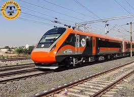

I recently had one of the most memorable travel experiences of my life, and it still feels fresh in my mind. I visited a beautiful place filled with greenery, calm surroundings, and fresh air that made me feel relaxed instantly. The journey to the destination was also very enjoyable. As I moved away from the busy city, I could feel the peacefulness of nature slowly surrounding me. The roads were scenic, and every view looked like a picture.
When I arrived, I was amazed by the beauty of the place. There were trees all around, birds singing, and a cool breeze that made the environment even more refreshing. I spent my time exploring different spots, taking photos, and simply enjoying the natural beauty. One of the best parts of my trip was meeting the local people. They were very friendly, welcoming, and kind. They shared stories about their culture and lifestyle, which made my experience even more meaningful.
The food there was another highlight of my journey. I tried some local dishes that were completely new to me, and I really enjoyed the taste. Everything felt fresh and unique. In the evening, I watched the sunset, and it was truly a magical moment. The sky changed colors slowly, and it created a peaceful and beautiful scene that I will always remember.
This trip was not just about visiting a new place, but also about refreshing my mind and escaping from my daily routine. It helped me reduce stress and feel more positive. I realized how important it is to take a break and explore the world around us. Overall, this journey gave me happiness, new experiences, and unforgettable memories. I am already looking forward to my next adventure.picture of my travel

My favourite song which I listen to during my travels
Click here to listen